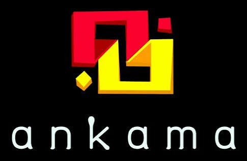
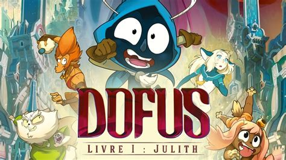
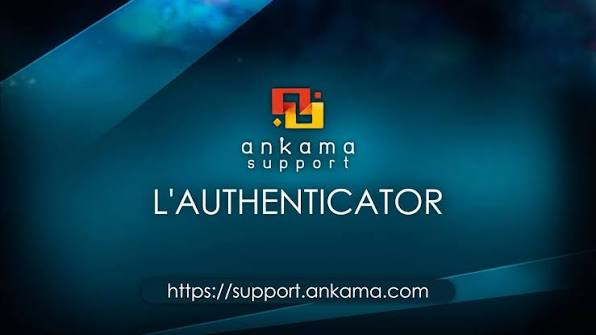
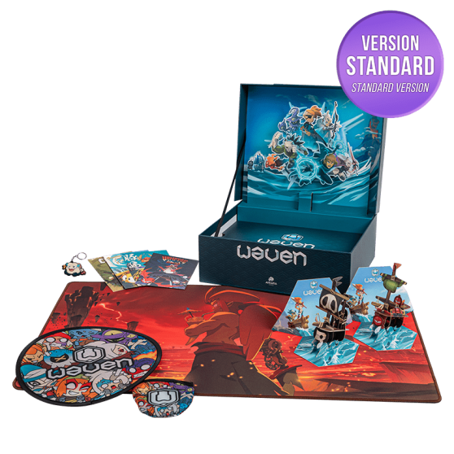

Ankama est une entreprise française créée en 2001 à Roubaix. Au départ, elle travaillait surtout dans la création de sites Internet.
L'histoire d'Ankama
La création
Dofus

En 2004, Ankama sort Dofus, son premier grand jeu vidéo. Le jeu connaît rapidement un grand succès et devient le symbole de l’entreprise.
Le développement

Après Dofus, Ankama développe d’autres projets comme Wakfu, des mangas et des séries d’animation. L’entreprise crée ainsi tout un univers autour de ses jeux.
La diversification

Ankama se développe dans plusieurs domaines : jeux vidéo, édition, animation et produits dérivés. Cela permet à l’entreprise de toucher un public plus large.
Aujourd’hui

Aujourd’hui, Ankama continue de développer ses jeux et ses différents univers. L’entreprise reste notamment connue pour Dofus et Wakfu.